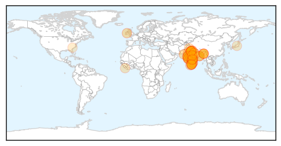

Swine Flu
30-Day Web Trend
9 alerts, 11 warnings

30-Day Twitter Trend
0 alerts, 0 warnings

Article Locations
Article Confidences

Top Articles:
- 1.000
- Swine flu outbreak 743 deaths ring alarm across India
- 1.000
- India battles swine flu as death toll crosses 700
- 1.000
- Swine flu outbreak: 774 deaths, 13,000 cases set alarm bells ringing
- 1.000
- India-controlled Kashmir struggles with deadly swine flu outbreak, as death toll reaches six
- 1.000
- Swine flu death tally rages across Punjab, Haryana and Himachal
- 1.000
- Flu positive cases show a decline across Rajasthan
- 0.999
- 15 U.P. districts in grip of swine flu
- 0.999
- Read Health News & Articles at TheHealthSite.com
- 0.999
- Delhi govt. takes measures to tackle Swine Flu menace
- 0.999
- H1N1 Swine flu: 31 more dead, nearly 13,000 affected
- 0.999
- Two women succumb to HINI virus, toll up to 13 in city
- 0.999
- Notice to 2 labs for ‘costly’ swine flu test
- 0.998
- Tests confirm police officer died of swine flu in J&K
- 0.998
- Govt. monitoring swine flu situation, assures Nadda
- 0.998
- Tests confirm police officer died of swine flu in Jamp;K
- 0.998
- Experts call for preventive measures to check swine flu
- 0.997
- Mumbaikars need not panic, says AMC Deshmukh
- 0.996
- The Assam Tribune Online
- 0.995
- Swine flu deaths rises to 670 in India, Ministry monitors situation
- 0.995
- State fixes swine flu test charges at Rs 2,500
- 0.995
- Country fully prepared to tackle swine flue
- 0.994
- Swine flu: Ten more deaths reported in Gujarat
- 0.994
- Swine flu: Ten more deaths reported in Gujarat
- 0.992
- Swine Flu death toll rises to 743
- 0.992
- Swine flu spread wings in Hyderabad, over a dozen IPS trainees test positive-India TV News
- 0.990
- IPS academy turns into hospital as swine flu spreads on campus
- 0.990
- Indian health authorizes say 700 have died in flu outbreak
- 0.986
- Swine flu fear: IPS academy shut for 2 days
- 0.980
- Addnl Drugs to Tackle Swine Flu
- 0.980
- "Mosquito bite" causes spread of swine flu
- 0.979
- Swine Flu Deaths in India Rise to 703 So Far This Year
- 0.975
- Five new swine flu cases in Bengal
- 0.971
- Nine IPS trainees at NPA test positive for swine flu
- 0.971
- Nine IPS trainees at NPA test positive for swine flu
- 0.966
- 9 IPS trainees test positive for swine flu at Hyderabad police academy
- 0.965
- Delhi: Show cause notice to 2 labs for overcharging for swine flu test
- 0.958
- Show cause notice to 2 labs for overcharging for swineflu test
- 0.948
- Nine trainee IPS officers test positive for swine flu in Hyderabad
- 0.947
- Surprise checks at private labs for overcharging for swine flu tests
- 0.945
- Kerala Sets a Healthy Model in Fighting Swine Flu
- 0.890
- Swine flu deaths in Rajasthan cross 190
- 0.850
- Declare swine flu natural calamity, IMA secy gen asks govt
- 0.783
- SWINE FLU:NC urges Guv to take steps on war-footing
- 0.781
- Man held for selling fake swine flu medicine
- 0.744
- Govt to send project proposal for Virology Lab in a week
- 0.728
- Nagging problems remain
- 0.722
- The World in Brief
- 0.696
- Two labs get notices for overcharging
- 0.667
- Steps taken to deal with swine flu, encephalitis: Nadda
- 0.654
- H1N1 test costs soar, complain residents
Showing top 50 articles...
Top Tweets:
-
No tweets found for Feb 21, 2015
West Nile Virus
30-Day Web Trend
3 alerts, 0 warnings
30-Day Twitter Trend
0 alerts, 0 warnings
Article Locations

Article Confidences

Top Articles:
-
No articles found for Feb 21, 2015
Top Tweets:
-
No tweets found for Feb 21, 2015